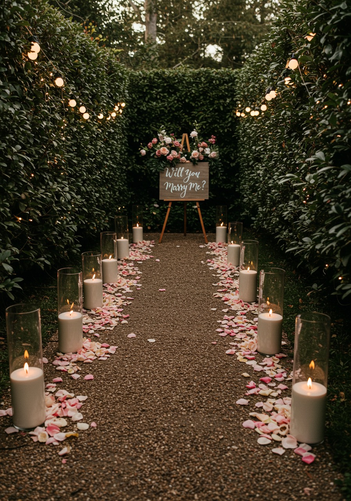

Wedding Candle Hire Perth Prices: What Does It Really Cost?
April 19, 2026
If you are comparing wedding candle hire in Perth prices, the real answer is that cost depends on quantity, table count, and how full you want the styling to feel. A smaller focal setup will cost very differently from a full reception candle look across every table.
For DIY couples, it helps to look at candle hire in a practical way: how many candles do you need, where will they go, and what kind of atmosphere are you trying to create? Once you know that, the price usually becomes much easier to understand.
Want to turn these numbers into a real quote? You can check your date and price your setup here.
What affects wedding candle hire pricing?
Wedding candle hire pricing is usually shaped by a few simple factors rather than one flat number.
Number of candles: This is the biggest cost driver. More candles usually means a fuller and more immersive look, but also a higher total spend.
Number of tables: If you have more guest tables, you will generally need more candles to keep the styling looking balanced across the room.
Where the candles are going: Some couples style only guest tables. Others also want candles on the sweetheart table, cake table, welcome sign, bar, or ceremony areas.
How full or minimal the styling is: A simple scattered glow might only need a few candles per table, while a fuller candlelit look can need much more.
If you are still working out the right quantity, you can also read our guide on how many candles you might need for a wedding.
Lustre Hire pricing explained simply
Lustre Hire is a DIY candle hire business in Perth, with pickup from Bull Creek. Our pricing is designed to stay straightforward as your quantity grows.
Here is how it works:
• Minimum order: 15 candles
• 15 to 44 candles: $10 each
• Candles 45 to 89: $9 each for the additional candles beyond 44
• Candles 90 and above: $8 each for the additional candles beyond 89
That means the first 44 candles are always priced at $10 each, then the next tier becomes a little cheaper, and the tier after that becomes cheaper again.
Realistic example price ranges
Here are a few simple examples using the actual Lustre Hire pricing logic.
| Candle quantity | How the pricing works | Total candle hire |
|---|---|---|
| 15 candles | 15 × $10 | $150 |
| 30 candles | 30 × $10 | $300 |
| 50 candles | 44 × $10, plus 6 × $9 | $494 |
| 75 candles | 44 × $10, plus 31 × $9 | $719 |
| 100 candles | 44 × $10, plus 45 × $9, plus 11 × $8 | $933 |
These examples give you a practical way to compare a smaller wedding setup with a larger, fuller styling plan.
Why the price per candle changes
The change in price per candle is simply a quantity-based tier. It helps larger orders stay better value without making smaller orders complicated.
In practice, that means if you are styling a bigger reception or covering more areas, the average cost per candle starts to improve as your quantity grows. It is not a trick or a hidden fee. It is just a simpler way to scale pricing fairly.
What couples often forget when budgeting
A lot of couples first think about guest tables only, then later remember the extra styling areas that make the whole setup feel more finished.
For example, a smaller focal setup might cover just a sweetheart table, cake table, and welcome sign. That can create a lovely candlelit moment without needing a large quantity.
A fuller whole-room look is different. If you want glow across guest tables as well as feature areas, the candle count climbs quickly. That does not mean you need to overdo it, but it is worth planning honestly from the start.
If you want a feel for how the hire process works after the event, our How to Return page gives a simple overview of packing and returning your order.
Is candle hire cheaper than buying candles?
That depends on what you are comparing it with, but for many DIY couples, hire can be a practical option. Buying enough candles, vessels, and styling pieces for a wedding can add up quickly, especially if you want everything to match and look polished.
Hire can make more sense for couples who want the candlelit look without needing to buy everything upfront, store it afterwards, or deal with leftover items they may never use again. It is also helpful if you want a cleaner, more ready-to-go setup rather than sourcing everything from scratch.
If you want to compare quantities side by side, you can also look at our candle packages for a quick starting point.
Working out the right setup for your budget
If your goal is to keep costs manageable, start by deciding whether you want:
• a smaller focal setup
• a balanced reception look
• or a fuller candlelit room
Once you know that, it becomes much easier to estimate your quantity, understand the price range, and see what feels realistic for your wedding.
Ready to check your date?
If you want to see what your setup might cost, the easiest next step is to check your date, get a quote, and book online when you are ready.
Ready to work out your quote?
Check your date, get a quote, and see what candle quantity fits your event best.
Check Availability